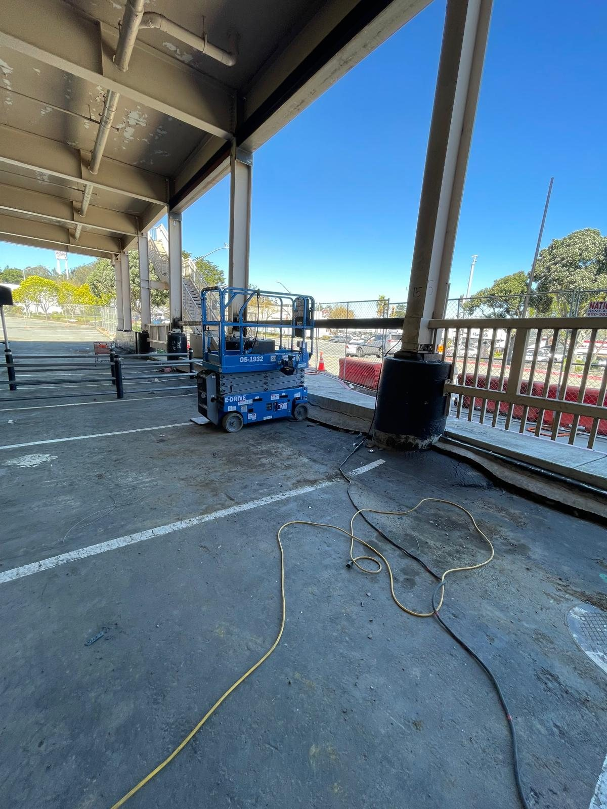

San Mateo Welding Service
Certified, insured mobile and shop welding in San Mateo, CA.
Production Welding brings certified, insured mobile welding to San Mateo for gates, railings, metal repair, trailer repair, equipment repair, and custom fabrication.
Local Welding Service
Mobile welding and shop work for San Mateo projects.
Mobile welding is a good fit when the repair is part of a building, vehicle, trailer, or fixed metal assembly that should stay on site; shop work is available when off-site welding makes more sense.
Common requests include gate welding, railing repair, trailer welding, equipment repair, shop welding, brackets, cracked metal repairs, reinforcement plates, and custom fabrication.
Why Call Production Welding
A practical welder for San Mateo repairs and fabrication.
Certified and insured
Work is handled by a certified, insured welder with a mobile setup built for on-site repair and fabrication.
Clear communication
Send photos, measurements, access notes, and timing so the project can be reviewed before the service visit.
Nearby coverage
Production Welding also serves Foster City, Burlingame, Redwood City, Belmont, and South San Francisco and other Bay Area communities near the San Mateo service area for mobile service and shop work.
Other Service Areas
Mobile and shop welding across the Bay Area.
Get a Welding Estimate
Need a certified, insured welder for mobile or shop work?
Call Production Welding or send the project details, location, photos, and timing. Mobile service and shop work are available across the Bay Area.